Нескучные финансы · 2025 · Продуктовый дизайн
Подбор финансового директора без поисков по чатам
Спроектировал рабочее место подбора и клиентскую страницу с кандидатами. Проверил прототип в двух раундах тестов и доработал сценарий выбора специалиста.
- Моя роль
- Исследование, сценарии, интерфейсы и юзабилити-тестирование вместе с продуктовой командой.
- Результат
- Рабочее место подбора запущено. Оценка простоты на тестах: 4,2 → 4,8 из 5. Продуктовое обоснование — ~8,6 млн ₽ чистой прибыли в год.
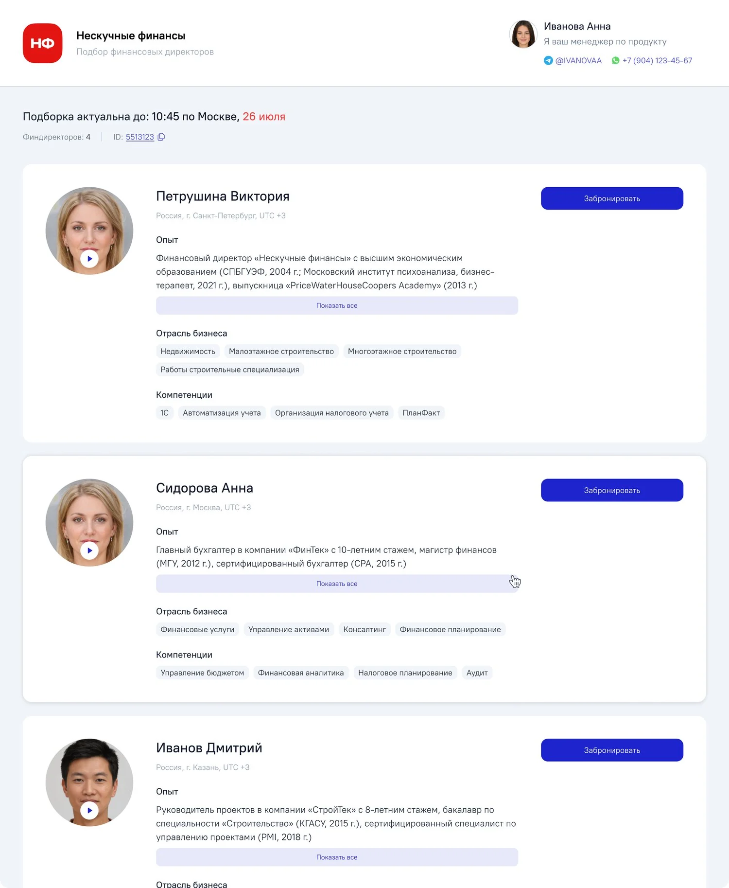
Для подбора приходилось собирать данные вручную
«Нескучные финансы» предоставляют бизнесу финансового директора на аутсорсе. Чтобы подобрать специалиста, нужно совместить запрос клиента с опытом, интересами и доступностью финансового директора.
До появления платформы данные жили в документах и переписке. Сотрудник, отвечающий за подбор, уточнял загрузку у кураторов и собирал кандидатов вручную. Клиент ждал, а участники процесса тратили время на согласования.
Нужно было спроектировать две части: рабочее место сотрудника подбора и страницу, на которой клиент знакомится с кандидатами. При этом сохранить участие менеджера по продажам: дорогую услугу с длительными отношениями нельзя было свести к выбору карточки.
Бизнес связывал проект с удержанием клиентов и специалистов, а также с нагрузкой на кураторов. Это направления ожидаемого эффекта. Непосредственная задача интерфейса — дать достаточно данных для подбора и убрать ручные операции вокруг него.
Разобрал процесс с участниками и сравнил 14 сервисов
Я провёл глубинные интервью с представителями трёх ролей и изучил существующий процесс. У финансовых директоров не было удобного способа влиять на свою загрузку. Сотруднику подбора приходилось искать доступных кандидатов по чатам. Кураторы держали информацию о занятости в голове и переписке.
Из этого сложились требования: учитывать пожелания специалиста, показывать актуальную доступность, использовать параметры клиента при подборе и освобождать невыбранных кандидатов от брони.
Параллельно сравнил 14 сервисов. В выборку вошли маркетплейсы услуг, сервисы психологии, здоровья и менторства: там можно было изучить, как люди выбирают специалиста. Для нашего продукта были важны опыт в нужной отрасли, понятный профиль и возможность познакомиться с человеком до встречи.
Материалы исследования и сравнение сервисов
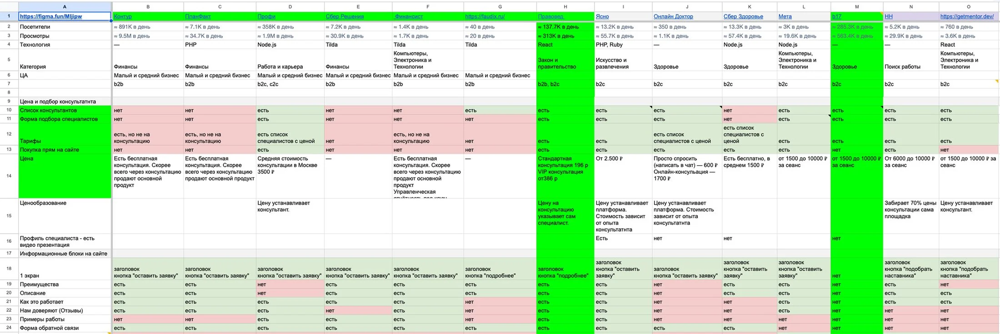
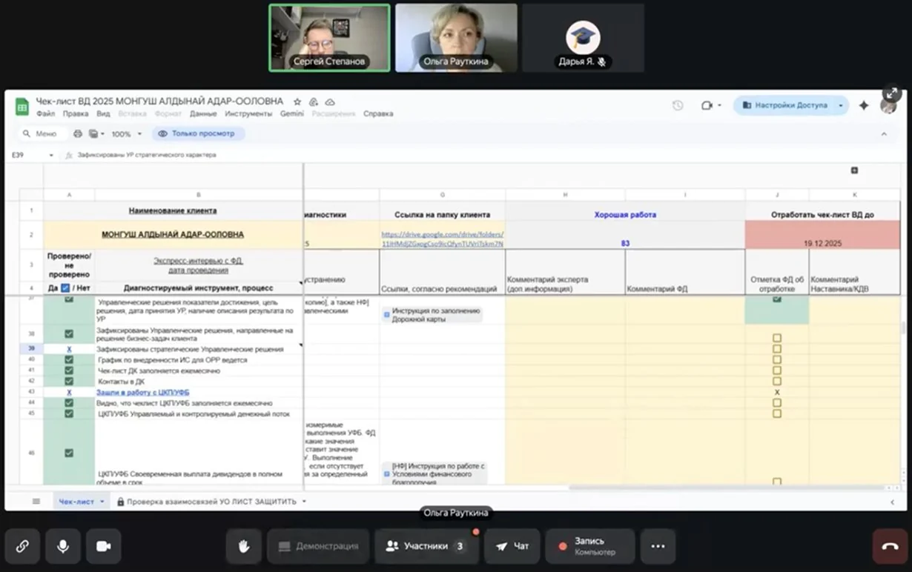
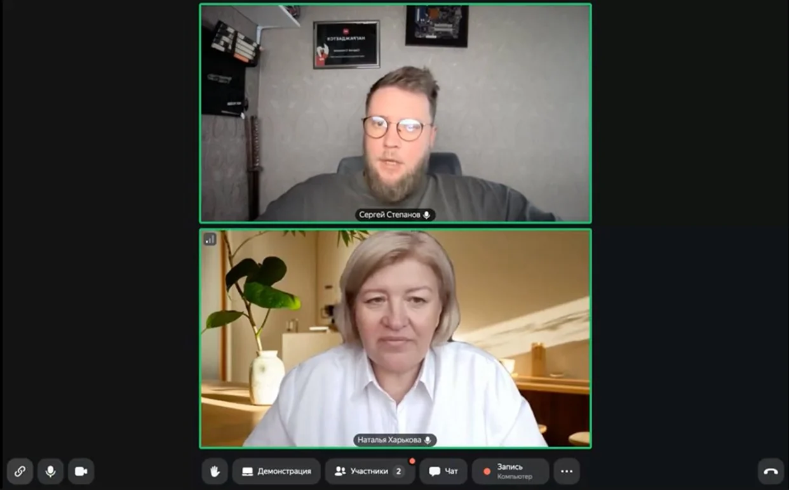
Три основных решения
1. Использовать запрос клиента как фильтр
Информация о клиенте стала частью механики подбора. Заведённый запрос ограничивает список кандидатов, а рядом с ними видна доступность: загрузка и ближайший отпуск. Сотрудник собирает подборку из подходящего пула.
При слишком узком запросе важно помочь расширить поиск без потери смысла. Для пустого результата проработал подсказку: например, перейти от конкретной подотрасли к более широкой отрасли, в которой опыт специалиста остаётся релевантным.
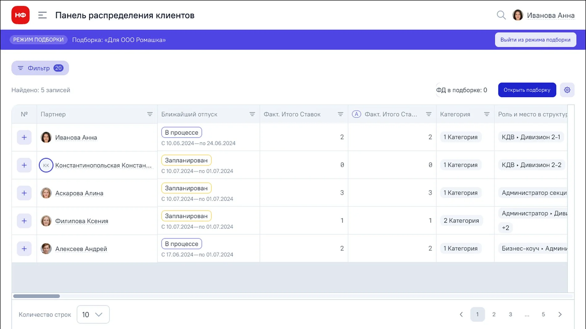
2. Сделать подборку отдельным объектом
У подборки есть собственный путь: создание, отправка клиенту, выбор и закрытие. Пока клиент выбирает, кандидаты забронированы. После выбора остальные должны освободиться для новых запросов.
Это позволило спроектировать явные состояния вместо договорённостей в переписке: что уже отправлено, кого выбрали и что делать, если никто не подошёл. Отдельно проработал создание, редактирование и удаление подборки.
3. Помочь клиенту оценить релевантность специалиста
В профиль включил опыт, отрасли, компетенции и кейсы. Видеовизитка дополняла эти сведения: по ней можно составить первое впечатление о человеке, с которым предстоит работать.
При этом клиенту нужно понимать и сам процесс: что произойдёт после выбора, кто с ним свяжется и сколько действует бронь. Именно этих объяснений не хватило в первой версии — это выяснилось на тестах.
Экраны, состояния и карта сценариев
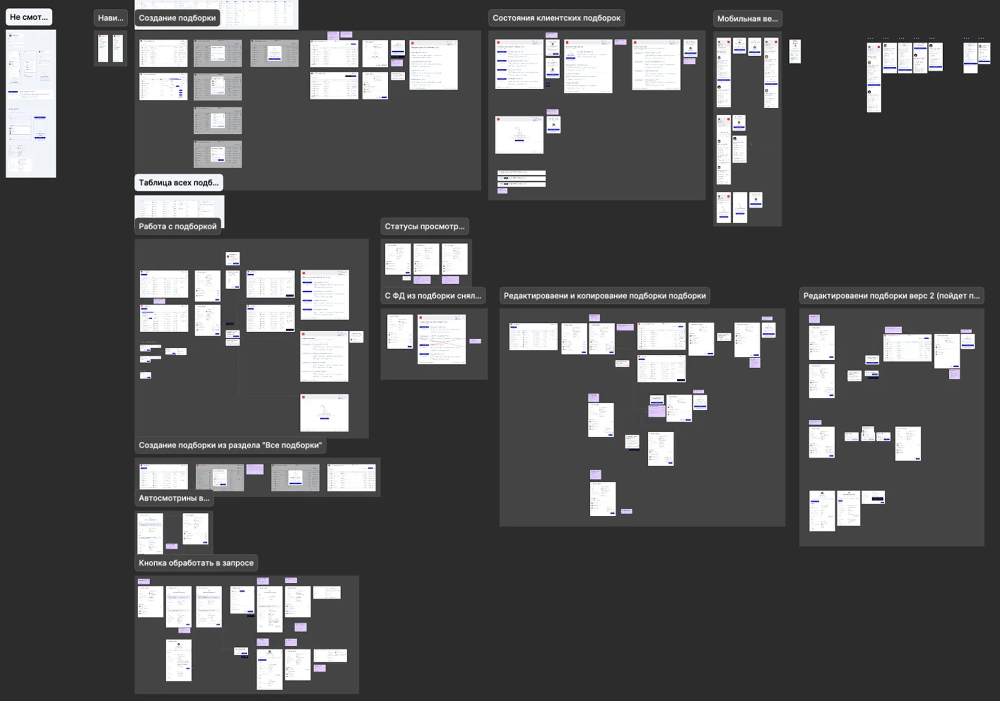
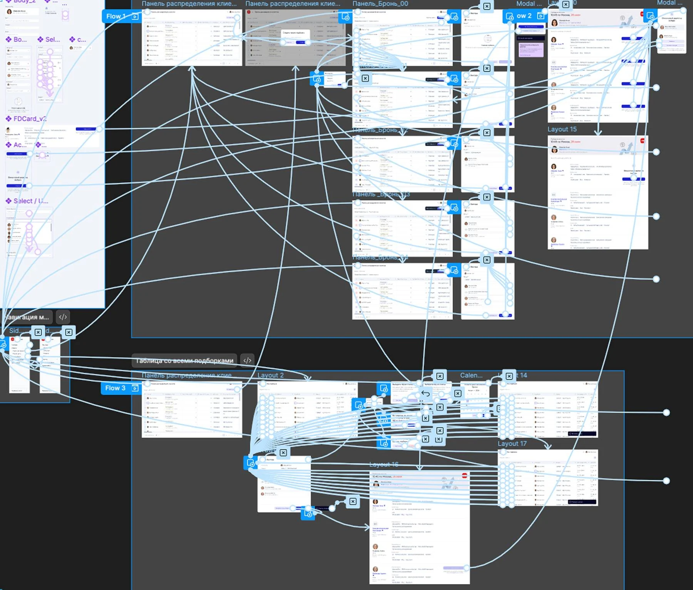
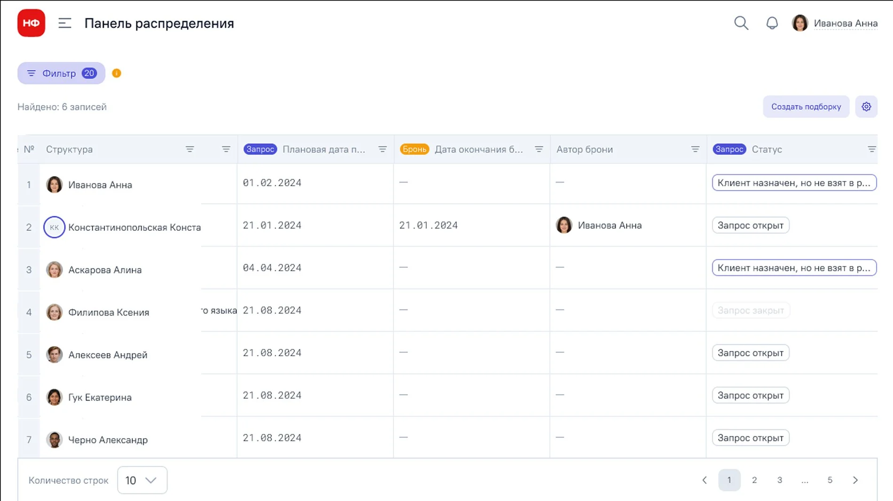
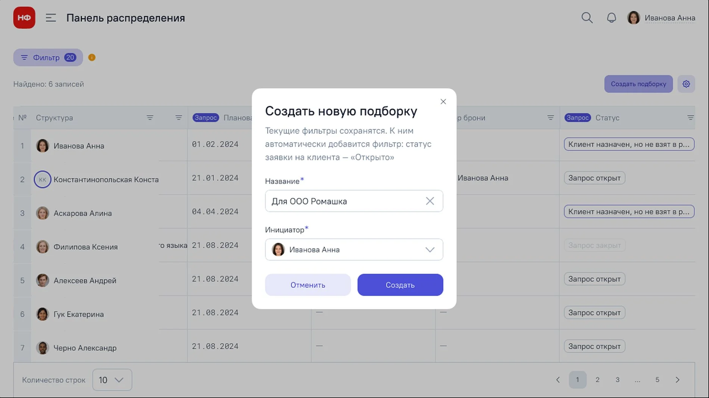
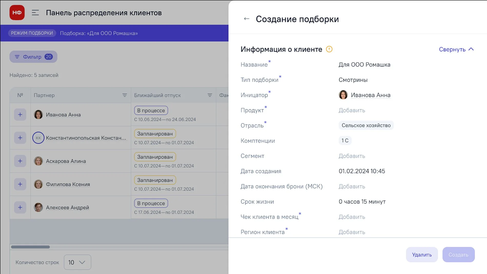
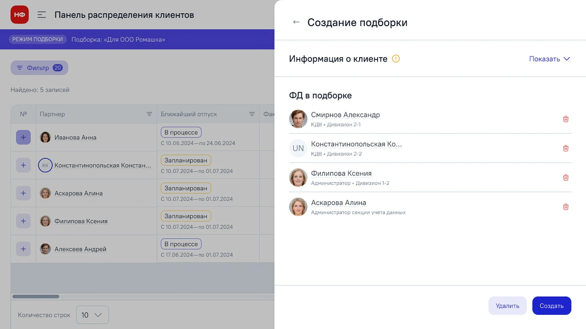
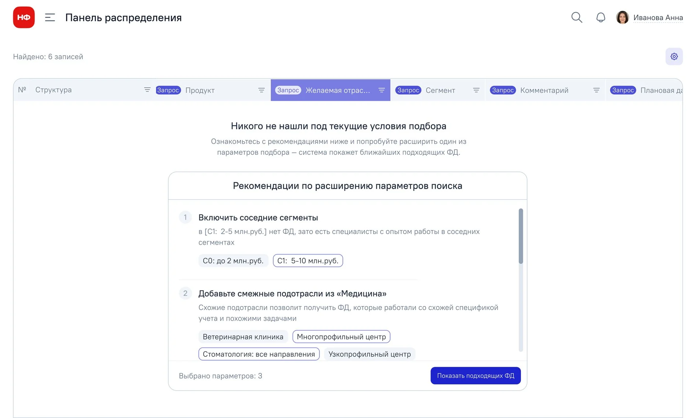
Что изменил после тестирования
Провёл два раунда модерируемых тестов — по семь участников, всего 14 человек. Проверяли создание подборки, выбор и бронь специалиста со стороны клиента, работу со списком подборок. Участники выполняли задания и проговаривали свои действия.
После первого раунда уточнил, что происходит после выбора финансового директора, обозначил менеджера по продажам как контактное лицо и доработал объяснение опций и брони.
Средняя оценка простоты выполнения задач в первом и втором раундах. Субъективная оценка участников после выполнения заданий на прототипе.
Обсуждения также показали возможность передать создание подборок менеджеру по продажам. Он уже ведёт клиента и знает его запрос. Такой вариант мог сократить число передач между сотрудниками; это стало выводом для дальнейшего развития процесса.
Гайд тестирования и синтез результатов
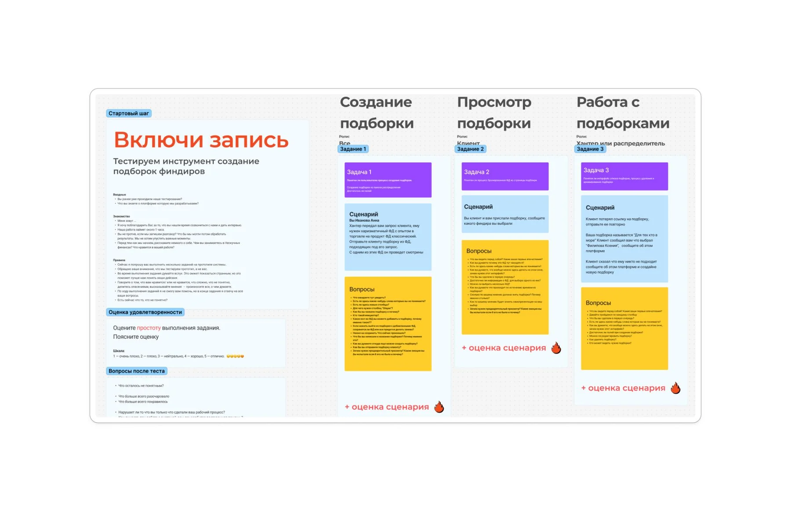
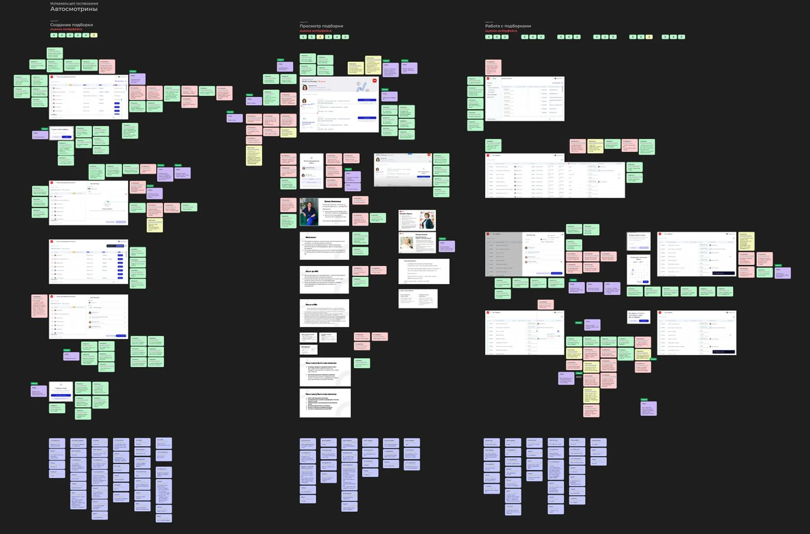
Что удалось подтвердить
Прототип прошёл два раунда проверки. После исправлений участники выше оценили простоту выполнения заданий. В запущенном продукте команда также наблюдала, что клиентов чаще привлекают специалисты с видеовизиткой.
Как считали ожидаемый эффект
Совместное продуктовое обоснование оценивало возможный прирост чистой прибыли примерно в 8,6 млн рублей в год: около 1,6 млн за счёт удержания финансовых директоров, 6 млн за счёт удержания клиентов и 1 млн за счёт разгрузки кураторов.
Это прогноз на основе целевых показателей удержания и нагрузки; модель я готовил вместе с продактом.
Что стоит измерять дальше
Время от запроса до готовой подборки, долю подборок, завершившихся выбором, и число ручных согласований. Эти показатели ближе к работе инструмента и помогли бы понять, где процесс всё ещё тормозит.
Мой вклад
Исследование и синтез требований, сравнение сервисов, принципы проектирования, ключевые экраны и состояния, два раунда юзабилити-тестов и доработка прототипа. Работал с продактом, кураторами и сотрудниками подбора. Финансовую модель готовили совместно.